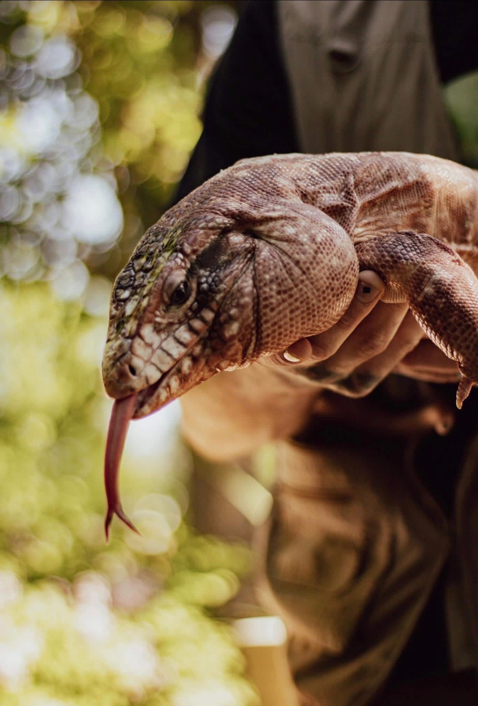
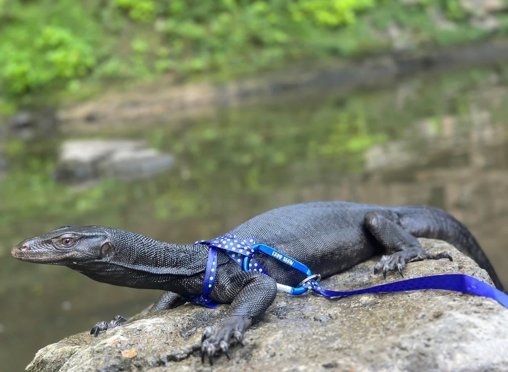
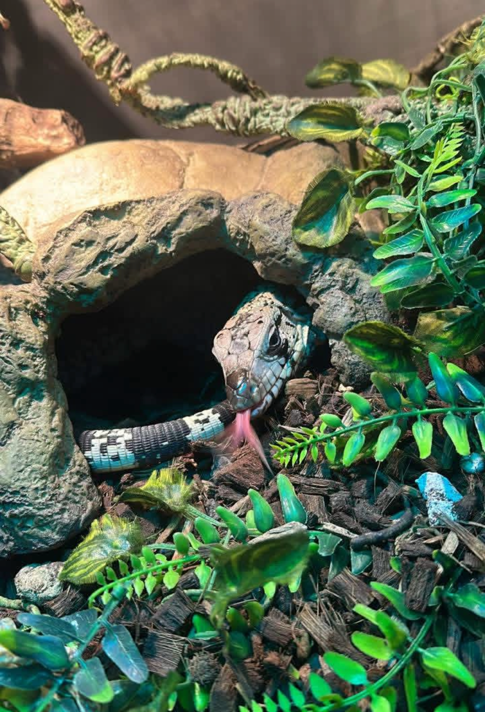

Tylon is a bearded-dragon that was surrendered alongside a blue-tongue Skink in 2023. They were well cared for and loved by their family. Unfortunately, their family had to move too far to bring their scaly companions along.
Tylon is around 7 to 8 years old and the definition of mellow. He quickly earned the nickname “The Tip Guardian” because he loves to perch calmly and watch the world go by; he has no stress, no fuss, just pure bearded-dragon zen. When it comes to food, Tylon is a messy eater with two favorites: fresh greens and pure pumpkin.
Mango is our vibrant orange iguana that loves climbing tents, trees, and anything she can reach. Luckily for us, she hasn't considered becoming an escape artist. While dried mango is her favorite snack, we make sure she enjoys a full, balanced iguana diet.
Iguanas often have an aggressive nature; however, proper care and taming makes the lizard relaxed and patient. Our Mango is not skittish around people and generally relaxed, which allows her intelligent and observant personality to shine.

Pete is our 9 year old Blue-Tongue Skink. Although he may look like a snake at first glance, he’s very much a lizard. He loves showing off his bold blue tongue. In the wild, the blue color is used to scare off predators, but in captivity it's just endearing.
Pete is still in his prime; he is small but mighty. He enjoys hunting insects and occasionally snacking on small mice. Everyone loves his bold yet sweet personality.
Jared is a black water monitor. His species can reach lengths of 6 to 7 feet and weigh over 60 pounds! However, Jared is still young, so he is about 3 feet long and 10 pounds.
Jared came from an overwhelmed owner that could no longer give him the amount of attention he needed. The owner reached out to us to be sure Jared got the care and daily taming he required to thrive. As a true carnivore, Jared enjoys prey animals, such as: white fish, rats, shrimp, and birds. He also loves to swim in large bodies of water.

Limón spent 13 years with his original family before he was surrendered to us. Though tiny, he makes up for his size with charm. He’s known for his little smiles, lip-licking, and his classic grumpy old man attitude.
Due to Limón's age, preferences, and temperament, he is unable to attend a lot of our shows. Our animals' welfare is our priority and we will not risk stressing out or harming our residents for shows.
Ice is still new to the rescue. He is a striking blue line Tegu; he has a rare high-white coloration which makes him one of a kind. Since he's young and small, he’s bursting with energy and growing fast. Ironically, the only time Ice is inactive is during the winter when he is brumating.

When Lenny arrived at the shelter, we took him to the vet. Exams and x-rays revealed a broken femur, infections in his paw, and wounds on his back. He required extensive veterinary care and rehabilitation due to the condition he was in. Remarkably, Lenny's condition has vastly improved; he is currently going through mobility rehab for his back legs. We are hopeful Lenny is going to make a full recovery.
When he’s not swimming and relaxing in his pool, Lenny loves exploring, digging, and hunting for food. He is a welcome addition to our family and we enjoy watching his recovery journey.